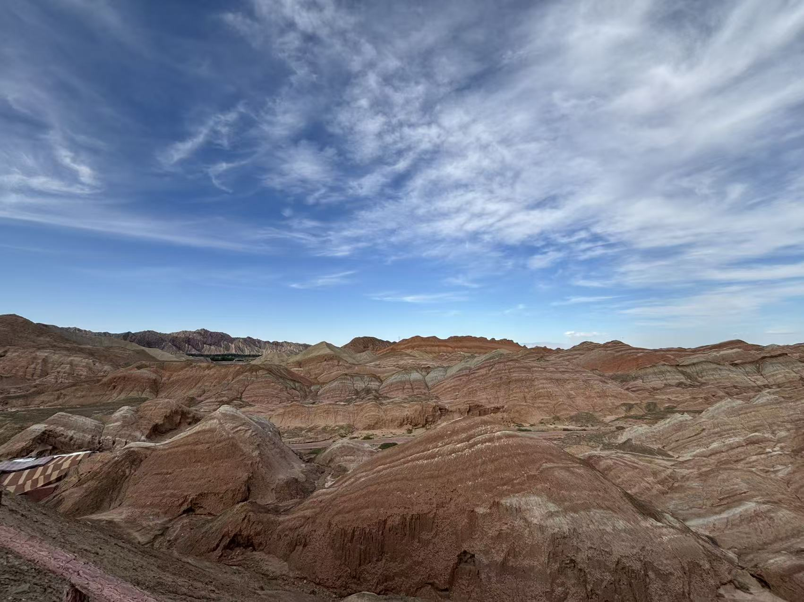

旅行体験

2024年6月、卒業旅行として友人たちと一緒に甘粛の大環状ルートを自動車で巡る旅に出ました。 広大な自然の中を走りながら、砂漠や草原、湖などさまざまな景色を楽しむことができ、日常ではなかなか味わえないスケールの大きさに圧倒されました。 長距離の移動や慣れない環境もありましたが、友人たちと協力しながら運転を分担し、トラブルも含めてすべてが良い思い出になりました。 特に、夕日に染まる大地や満天の星空を見た瞬間は今でも忘れられず、この旅を通して仲間との絆もより深まったと感じています。 本当に心から楽しいと感じられる、かけがえのない卒業旅行となりました。